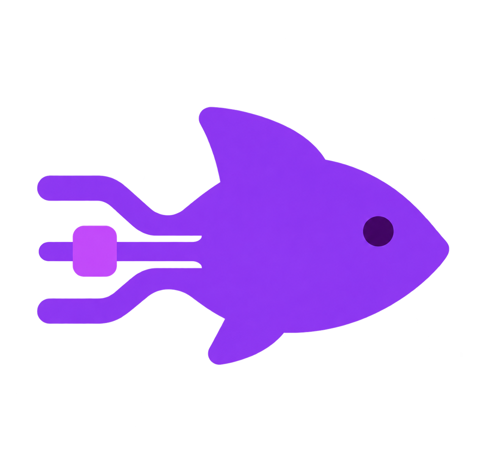

Проверьте, что видно в текущем захвате на этапах DNS, TCP и TLS.
Здесь появится HEX и ASCII выбранного пакета
Вы сможете переключить режим в любой момент.
Заметки сохраняются в PCAPNG.
tcp || udp — показать TCP или UDP
tcp || udp
tls && port=443 — TLS на порту 443
tls && port=443
src=192.168.1.10 — пакеты с этого адреса
src=192.168.1.10
dst=1.1.1.1 — пакеты на этот адрес
dst=1.1.1.1
id=42 — пакет по номеру
id=42
Можно также искать по адресу, описанию пакета или заметке.